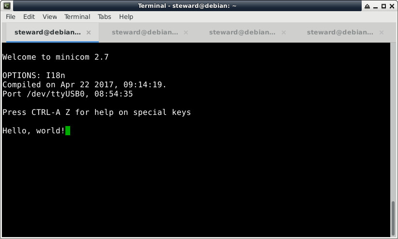

Miyoo >> Assembly
UART
main.s
.global _start .equiv PLL_CPU_CTRL_REG, 0x0000 .equiv PLL_VIDEO_CTRL_REG, 0x0010 .equiv PLL_PERIPH_CTRL_REG, 0x0028 .equiv CPU_CLK_SRC_REG, 0x0050 .equiv AHB_APB_HCLKC_CFG_REG, 0x0054 .equiv BUS_CLK_GATING_REG2, 0x0068 .equiv DRAM_GATING_REG, 0x0100 .equiv PLL_STABLE_TIME_REG0, 0x0200 .equiv PLL_STABLE_TIME_REG1, 0x0204 .equiv BUS_SOFT_RST_REG2, 0x02d0 .equiv PA_CFG0, 0x0000 .equiv PA_DATA, 0x0010 .equiv CCU_BASE, 0x01c20000 .equiv GPIO_BASE, 0x01c20800 .equiv UART1_BASE, 0x01c25400 .equiv UART_RBR_REG, 0x0000 .equiv UART_DLL_REG, 0x0000 .equiv UART_DLH_REG, 0x0004 .equiv UART_IER_REG, 0x0004 .equiv UART_IIR_REG, 0x0008 .equiv UART_LCR_REG, 0x000c .equiv UART_MCR_REG, 0x0010 .equiv UART_USR_REG, 0x007c .arm .text _start: .long 0xea000016 .byte 'e', 'G', 'O', 'N', '.', 'B', 'T', '0' .long 0, __spl_size .byte 'S', 'P', 'L', 2 .long 0, 0 .long 0, 0, 0, 0, 0, 0, 0, 0 .long 0, 0, 0, 0, 0, 0, 0, 0 _vector: b reset _undefined: b . _software: b . prefetch: b . _abort: b . _reserved: b . _irq: b . _fiq: b . reset: @sys clock init ldr r0, =CCU_BASE ldr r1, =0x1ff str r1, [r0, #PLL_STABLE_TIME_REG0] str r1, [r0, #PLL_STABLE_TIME_REG1] ldr r1, [r0, #CPU_CLK_SRC_REG] bic r1, #(3 << 16) orr r1, #(1 << 16) str r1, [r0, #CPU_CLK_SRC_REG] ldr r2, =100 1: subs r2, #1 bne 1b ldr r1, =0x81004107 str r1, [r0, #PLL_VIDEO_CTRL_REG] ldr r2, =100 1: subs r2, #1 bne 1b ldr r1, =0x80041800 str r1, [r0, #PLL_PERIPH_CTRL_REG] ldr r2, =100 1: subs r2, #1 bne 1b ldr r1, =0x00003180 str r1, [r0, #AHB_APB_HCLKC_CFG_REG] ldr r2, =100 1: subs r2, #1 bne 1b ldr r1, [r0, #DRAM_GATING_REG] orr r1, #(1 << 26) | (1 << 24) str r1, [r0, #DRAM_GATING_REG] ldr r2, =100 1: subs r2, #1 bne 1b ldr r1, [r0, #PLL_CPU_CTRL_REG] ldr r2, =(0x3 << 16) | (0x1f << 8) | (0x3 << 4) | (0x3 << 0) bic r1, r2 ldr r2, =(1 << 31) | (0 << 16) | (16 << 8) | (0 << 4) | 0 orr r1, r2 str r1, [r0, #PLL_CPU_CTRL_REG] 1: ldr r1, [r0, #PLL_CPU_CTRL_REG] tst r1, #(1 << 28) beq 1b ldr r1, [r0, #CPU_CLK_SRC_REG] bic r1, #(3 << 16) orr r1, #(2 << 16) str r1, [r0, #CPU_CLK_SRC_REG] ldr r2, =100 1: subs r2, #1 bne 1b @sys uart init ldr r0, =GPIO_BASE ldr r1, [r0, #PA_CFG0] bic r1, #(0xf << ((3 & 0x7) << 2)) orr r1, #((0x5 & 0x7) << ((3 & 0x7) << 2)) str r1, [r0, #PA_CFG0] ldr r1, [r0, #PA_CFG0] bic r1, #(0xf << ((2 & 0x7) << 2)) orr r1, #((0x5 & 0x7) << ((2 & 0x7) << 2)) str r1, [r0, #PA_CFG0] ldr r0, =CCU_BASE ldr r1, [r0, #BUS_CLK_GATING_REG2] orr r1, #(1 << 21) str r1, [r0, #BUS_CLK_GATING_REG2] ldr r1, [r0, #BUS_SOFT_RST_REG2] orr r1, #(1 << 21) str r1, [r0, #BUS_SOFT_RST_REG2] ldr r0, =UART1_BASE ldr r1, =0 str r1, [r0, #UART_IER_REG] ldr r1, =0xf7 str r1, [r0, #UART_IIR_REG] ldr r1, =0 str r1, [r0, #UART_MCR_REG] ldr r1, [r0, #UART_LCR_REG] orr r1, #(1 << 7) str r1, [r0, #UART_LCR_REG] ldr r1, =0x36 str r1, [r0, #UART_DLL_REG] ldr r1, =(0x36 >> 8) str r1, [r0, #UART_DLH_REG] ldr r1, [r0, #UART_LCR_REG] bic r1, #(1 << 7) str r1, [r0, #UART_LCR_REG] ldr r1, [r0, #UART_LCR_REG] bic r1, #0x1f orr r1, #(3 << 0) | (0 << 2) | (0 << 3) str r1, [r0, #UART_LCR_REG] ldr r0, =UART1_BASE ldr r2, =hello 1: ldr r1, [r0, #UART_USR_REG] tst r1, #(1 << 1) beq 1b ldrb r1, [r2] strb r1, [r0, #UART_RBR_REG] add r2, #1 cmp r1, #0 bne 1b main: b main .align hello: .asciz "Hello, world!" .end
main.ld
OUTPUT_FORMAT("elf32-littlearm", "elf32-bigarm", "elf32-littlearm")
OUTPUT_ARCH(arm)
ENTRY(_start)
STACK_UND_SIZE = 0x10000;
STACK_ABT_SIZE = 0x10000;
STACK_IRQ_SIZE = 0x10000;
STACK_FIQ_SIZE = 0x10000;
STACK_SRV_SIZE = 0x40000;
MEMORY
{
ram : ORIGIN = 0x00000000, LENGTH = 32M
}
SECTIONS
{
.text :
{
PROVIDE(__spl_start = .);
*(.text*)
PROVIDE(__spl_end = .);
*(.init.text)
*(.exit.text)
*(.glue*)
*(.note.gnu.build-id)
} > ram
PROVIDE(__spl_size = __spl_end - __spl_start);
.rodata ALIGN(8) :
{
PROVIDE(__rodata_start = .);
*(SORT_BY_ALIGNMENT(SORT_BY_NAME(.rodata*)))
PROVIDE(__rodata_end = .);
} > ram
.data ALIGN(8) :
{
PROVIDE(__data_start = .);
*(.data*)
. = ALIGN(8);
PROVIDE(__data_end = .);
PROVIDE(__image_end = .);
} > ram
.bss ALIGN(8) (NOLOAD) :
{
PROVIDE(__bss_start = .);
*(.bss*)
*(.sbss*)
*(COMMON)
. = ALIGN(8);
PROVIDE(__bss_end = .);
} > ram
.stab 0 : { *(.stab) }
.stabstr 0 : { *(.stabstr) }
.stab.excl 0 : { *(.stab.excl) }
.stab.exclstr 0 : { *(.stab.exclstr) }
.stab.index 0 : { *(.stab.index) }
.stab.indexstr 0 : { *(.stab.indexstr) }
.comment 0 : { *(.comment) }
.debug_abbrev 0 : { *(.debug_abbrev) }
.debug_info 0 : { *(.debug_info) }
.debug_line 0 : { *(.debug_line) }
.debug_pubnames 0 : { *(.debug_pubnames) }
.debug_aranges 0 : { *(.debug_aranges) }
}
Makefile
all: arm-linux-as -mcpu=arm9 -o main.o main.s arm-linux-ld -T main.ld -o main.elf main.o arm-linux-objcopy -O binary main.elf main.bin gcc mksunxi.c -o mksunxi ./mksunxi main.bin flash: sunxi-fel -p spiflash-write 0 main.bin clean: rm -rf main.bin main.o main.elf
完成
